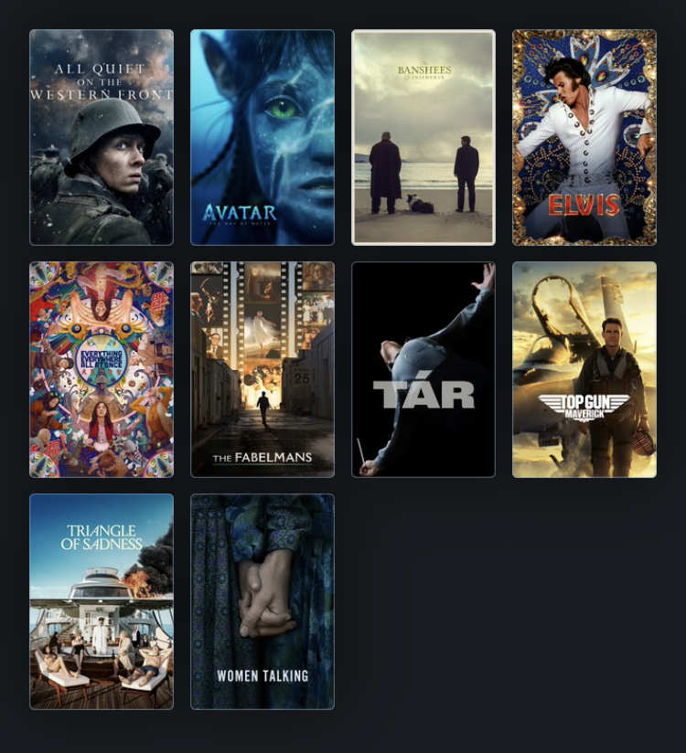

En este blog hablaremos del cine, con el objetivo claro del entretenimiento. No estaremos
criticando las películas, o no de la manera que se piensa, sino que enseñaremos los aspectos
positivos que te brindan el ver y disfrutar cine. También hablaremos de franquicias grandes
que han estado en la pantalla grande durante años, como el caso de Star Wars.
Desarrollo
El cine ha existido ya por más de cien años y es actualmente uno de los medios de
entretenimiento más importantes y grandes. Aunque, al igual que va creciendo, en algunas
cosas ha rebajado su calidad con tal de generar más ganancias. Aún así, no se le puede
quitar el mérito a todo el trabajo hecho por los directores y productores al expresar algo y
plasmarlo en una pantalla.
El entretenimiento fue uno de los principales objetivos de los filmes antiguos, y poco a poco
ha tomado más calidad para que su narración y planteamiento de qué enseñar y cómo enseñarlo
crezca. Nuevas tecnologías y técnicas han llevado a que las historias fantásticas que uno se
imagina en su cabeza ahora puedan ser mostradas a todo el público.
Motivación
Somos grandes fans del cine, especialmente de las historias heróicas, complejas y que tratan
de mostrar lados de la vida que, en este mundo que se mueve muy rápido, olvidamos. No todo
se trata de generar dinero, y no todo tiene que ser perfecto para que sea “perfecto” para
ti. Estas y otras cosas son las que nos han enseñado los personajes de cada una de estas
magníficas obras.
Rankings: Las Películas más taquilleras de la historia
09/10/22
Furious 7
The Avengers
The Lion King (2019)
Jurassic World
Spider-Man: No Way Home
Avengers: Infinity War
Star Wars: Episode VII - The Force Awakens
Titanic
Avengers: Endgame
Avatar
Páginas oficiales de información
09/10/22
Aquí se encuentran algunas de las páginas de críticas más populares entre los cinéfilos,
llenas de reseñas, conversaciones e información sobre el mundo del cine:
Una gran crítica a la industria del cine en los últimos años ha sido la carencia de
visión y creatividad artística en sus obras, con declaraciones como Martin Scorsese
comparando
a las películas de superhéroes con parques de diversiones o Quentin Tarantino comentando que
la era del cine actual es una de las peores eras en toda la historia del medio.
Desafotunadamente, estas declaraciones tienen su lado de verdad, considerando que la mayoría
de las grandes producciones actuales son simples productos diseñados para atraer y
satisfacer
a la mayor cantidad de gente, son historias creadas por un comité de productores pensando en
qué podría generarles más ingreso.
Pero este año, un blockbuster en particular se levanta de entre las sombras para demostrar
que aún hay lugar para una visión artístico en estas producciones.
"The Batman", dirigida por Matt Reeves y protagonizada por Robert Pattinson es una anomalía
en el mundo actual del entretenimiento masivo, una película con algo real que decir acerca
de estos
personajes, una historia de abandonar la venganza y la furia y convertirla en algo más. Un
filme
que nos da esperanza de ver el cine blockbuster de regresar a lo que alguna vez fue.
Loverboy Media es un canal de análisis de películas en el siempre busca la empatía y el
positivismo y encontrar qué es lo que alguien puede amar en estas obras cinematográficas.
Pinocho
15/11/22
Un niño de madera y un director con un sueño
La esperada adptación del clásico cuento de hadas sobre Pinocho, el niño de madera,
está a muy pocos días de su estreno mundial, llegando a prinipios de diciembre a la
plataforma de Netflix en todo el mundo, e incluso ya ha llegado a salas exclusivas de
Cine
en Estados Unidos, Europa y a lo largo de toda Latinoamérica. La película, la
cual se
postula a favorita para llevarse el premio de la Academia a mejor película animada en la
próxima entrega de los Oscares, es probablemente uno de los proyectos más personales del
aclamado director mexicano, debido a su conexión personal con la historia desde su juventud,
al grado de que Del Toro luchó contra todas las adversidades para que su versión de este
clásico
cuento de hadas se hiciera realidad. Y vaya que hubo muchas adversidades.
La película fue anunciada en 2008, para originalmente, tener un estreno en salas en 2013.
En su anuncio original, Del Toro dejó muy en claro qué tan importente era este
proyecto
para él, declarando: ninguna forma de arte ha influido en mi vida y mi
trabajo más que
la animación y ningún personaje en la historia ha tenido una conexión personal tan
profunda
conmigo como Pinocho [...] quería hacer esta película desde que tengo memoria.
En 2011, la película fue anunciada para ser codirigida por Gris Grimly y Mark Gustafson,
con un guión escrito por Del Toro y un estilo de animación completamente hecho con
Stop-Motion,
sin embargo, en 2012 la producción entró en "development hell" y fue incapaz de siquiera
comenzar su filmación, mucho menos de terminar la cinta para 2013 como se había esperado,
esto dejó al proyecto completamente en el limbo por varios años, hasta 2017, cuando Del Toro
comentó que el presupuesto esperado de la cinta sería de unos 35 000 000 dólares, y que
ningún estudio había estado dispuesto a financiarlo. Productores de la cinta sugirieron
realizarla en 2D para reducir significativamente su costo, pero Del Toro continúo luchando
para traer su visión a la realidad tal y como él lo había originado. No fue hasta 2018 que
Netflix tomó el proyecto, esperando un estreno a cines y en su plataforma para 2022.
Otro Pinocho y el dilema de los Remakes
Parece que este año ha sido uno atatreado para el niño de madera, ya que además de su
interpretación por Del Toro, la historia de Pinocho tuvo ya una segunda adptación este año
a través del Remake hecho por Disney para su plataforma de streaming y dirigida por
Robert Zemeckis,
reconocido por haber dirigido grandes cintas como la trilogía de "Back to the Future" y
"Forest Gump"
junto con Tom Hanks, quien también tuvo participación en esta "nueva"
adaptación. Suena como Una
fórmula para el éxito ¿no? Una versión de Pinocho hecha por un gran director y producida
por el estudio que le dio fama a la historia en primer lugar.
¿Qué podría salir mal? Bueno, muchas cosas al parecer.
El remake de Pinocho sufre de los mismos problemas que la mayoría de los remakes de Disney
en los últimos años, y es la muestra de falta de interés del estudio por querer hacer algo
creativo e innovador, y solamente querer generar ganancias a través de alguna IP
(intelectual
Property) ya establecida, buscando atraer a nuevos suscriptores para su servicio de
streaming
únicamente a través de la nostalgia.
Ver nuevas versiones y visiones de una historia que ya se ha contado antes no es nada
negativo,
toma de ejemplo las múltiples versiones de James Bond que hemos visto, o algunas de los
grandes
remakes de la historia cinematográfica como "The Thing" de John Carpenter o "Invasion of the
Body
Snatchers" de Philip Kaufman, pero el problema se encuentra justamente en lo "nuevo".
Los mejores
remakes son aquellos que toman una IP ya existente y logran contar una nueva versión de
esta historia
y sus personajes mientras mantienen la misma esencia de la original. Creando su propia
identidad
pero manteniendo el mismo espíritu que el pasado. Y cuando se trata de las
reinterpretaciones de
Disney, caen en ambos extremos, o rehacen la misma película que antes pero en una versión
inferior
debido a los limitantes que trae el rehacer una animación a live-action (como es el caso de
Lion King (2019) y ahora Pinocho (2022)) o se distancian tanto de la original que no queda
nada
de la esencia de esta (como fue el caso con Mulán (2020)).
Pinocho de Guillermo del Toro promete no caer en estos mismos problemas que cometió su
contraparte
Disneyficada, sino posiblemente entregar una de los mejores remakes de los últimos años,
al traer la
historia de Pinocho con una visión completamente diferente pero manteniendo todo aquello
que le da
esencia a la historia.
El director mexicano Guillermo Del Toro en la producción
de su adptación del cuento de Pinocho.
Cortometraje Creatividad: "Un Buen Día"
07/12/22
Nuestro propia historia
Este periodo tuvimos que realizar como parte de un proyecto de la materia de Creatividad
un cortometraje hecho por nosotros mismos. Y qué mejor que compartirlo en este medio donde hablamos
sobre el cine y las producciones cinematográficas.
El corto trata sobre la vida de un don nadie en un mundo donde el ser único está prohibido. Todos
los días son los mismos para todas las personas, la misma rutina, el mismo horario. Al menos así es
hasta que nuestro protegonista conoce a un misterioso extraño, quien le muestra lo que es la vida
cuando la vives como tú quieres.
(Estamos conscientes de lo parecido que esta premisa suena a The LEGO Movie pero esa
coincidencia fue tan solo eso, una coincidencia).
Un Buen Día
¡Y el OSCAR es para...!
28/01/23
Lista de competidoras para el premio de la Academia 2023

La lista de las 10 películas seleccionadas por la Academia que competirán por ganar el
reconocimiento a la mejor película del 2022.
La temporada de premios ha llegado a su punto máximo con las nominaciones de las películas que serán reconocidas
el próximo 12 de marzo como las mejores producciones cinematográficas del año pasado. Como todos
los años, este preludio a la famosa entrega de premios ha dado mucho que hablar en la comunidad cinéfila, con
aquellos que creen que algunas películas debieron haber sido nominadas mientras se cuestionan la presencia de algunas
de estas producciones. En especial resalta la ausencia de películas como RRR y Babylon
las cuales habían alcanzado gran popularidad tanto en el público como en otras premiaciones. De igual manera la
inclusión de Top Gun: Maverick y Avatar: The Way Of Water resultaron ser una
grata sorpresa debido al ya conocido rechazo de la Academia por producciones blockbuster.
Aquí entonces les presentamos las películas nominadas este año para la categoría de Mejor Película:
All Quiet On The Western Front
"Im Westen nichts Neues"
Dirigida por Edward Berger
Esta película alemana sigue a un grupo de jóvenes enlistados para combatir durante la Primera Guerra Mundial,
donde descubren poco a poco el verdadero costo de la guerra. Obligándolos a luchar por sobrevivir en un mundo lleno de crueldad
y violencia.
Avatar: The Way of the Water
Dirigida por James Cameron
La esperada secuela al evento cinematográfico del 2009, la cual tomó más de una década en su producción
debido a la constante creación de nuevas tecnologías, las cuales dan como resultado una experiencia
como ninguna otra.
Avatar sigue a la familia Sully del planeta Pandora conforme tratan
de huir de las garras de los humanos, quienes han regresado a este reino alienígena para tomar
venganza del pueblo nativo de los N'avi.
The Banshees of Inisherin
Dirigida por Martin McDonagh
En una solitaria isla Irlandesa, dos mejores amigos comienzan a distanciarse cuando uno de ellos
inexplicablemente ha dejado de hablarle al otro. Esta historia, protagonizada a la perfección por
Colin Farrell, Brendan Gleeson y Kerry Condon es
una exploración de la vida humana, que hace cuestionarnos el motivo de la vida y qué es más importante, si
ser buenas personas o dejar una marca en este mundo cueste lo que cueste.
Elvis
Dirigida por Baz Luhrmann
Este biopic musical nos cuenta la historia de una de las leyendas más grandes en la historia del
Rock a través de los ojos de su agente. Siguiendo la vida de Elvis Presley, interpretado por Austin Butler,
conocemos al hombre detrás de la leyenda, sus inicios, su ascenso al estrellato y su eventual decaída a
los vicios los cuales culminaron con su trágica muerte.
Everything Everywhere All At Once
Dirigida por Daniel Scheinert & Daniel Kwan
Esta película de ciencia ficción combinada con comedia y artes marciales rápidamente se está
convirtiendo en uno de los grandes clásicos modernos el cual definirá esta era cinematográfica
para generaciones futuras. Cuenta la historia de Evelyn Wang (interpretada por Michelle Yeoh
quien ha recibido su primera nominación actoral de su larga carrera), quien es elegida por
su esposo de otro universo, Waymond (que marca el regreso del actor Ke Huy Quan, conocido
por sus papeles de niño en películas ochenteras como Indiana Jones y Los Goonies, y es el favorito para
llevarse el reconocimiento a mejor actor de reparto) para liderear una misión en contra de
Jobu Tupaki, una mujer omnipotente que busca la destucción de todo el multiverso.
The Fabelmans
Dirigida por Steven Spielberg
Steven Spielberg, uno de los cineastas más influyentes de el último siglo, nos cuenta la historia
de su infancia en este personal drama familiar a través de Sammy Fabelman, un niño amante del
cine que busca cumplir su sueño de un día trabajar en la industria mientras su familia comienza
a desmoronarse de poco en poco.
TÁR
Dirigida por Todd Field
Lydia Tár (interpretada por Cate Blanchett, quien liderea la categoría
de mejor actriz) es una de las compositoras más grandes en el mundo
de la música clásica, pero este estátus de prestigio trágicamente comenzará a derrumbarse cuando
oscuros secretos de la compositora sean revelados al público.
Top Gun: Maverick
Dirigida por Joseph Kosinski
Tom Cruise protagoniza esta secuela al clásico ochentero que rápidamente se ha
alzado a los cielos para posicionarse como uno de los grandes blockbusters de tiempos modernos.
Maverick regresa después de tres décadas para encabezar una misión de altro riesgo para evitar
una posible guerra atómica. Aquello que hace a este filme especial y diferente al resto de las
producciones del género de acción es el compromiso de Cruise por realizar acción real, creando nuevas
tecnlogías para grabar a aviones reales en combate, Maverick demuestra lo que realmente es posible
para las películas de acción en esta nueva década.
Triangle of Sadness
Dirigida por Ruben Östlund
Una sátira a la clase alta, Triangle of Sadness sigue a un grupo de ricos en un crucero, cuando sus
vacaciones no resultan ser lo que ellos esperaban, resultando en una hilarante serie de sucesos
que pondrá a estos tripulantes en situaciones inimaginables para ellos.
Women Talking
Dirigida por Sarah Polley
Dentro de una comunidad religiosa aislada del resto de la civilización, un grupo de mujeres se reúne
para tratar de reconciliarse a sí mismas con el abuso que se les ha sido inflingido por los hombres
de la comunidad.
Toy Story 5: ¿Una secuela innecesaria?
10/02/2023
En los últimos días Disney reveló algunos de los proyectos animadas que desarrollarán en los próximos años,
entre los cuales se encuentran una secuela a Zootopia y una tercera parte de Frozen,
ambas de estas decisiones tienen un sentido completo tanto dentro de una perspectiva comercial como una artística,
debido a que ambas de las respectivas partes anteriores superaron el billón de dólares recolectado en taquilla, pero también
se tratan de franquicias que aún pueden ofrecer más historias dentro de sus respectivos universos. Sin embargo,
hubo otro anuncio que enloqueció por completo al internet, y este fue una quinta entrega de la saga de Toy Story.
Hay múltiples razones por las cuales este anuncio puede parecer tan extraño y frsutante para la audiencia.
Por el lado artístico una quinta entrega no tiene sentido en lo absoluto, la franquicia ya había tenido
una excelente y satisfactoria conclusión con Toy Story 3, y todavía después se estrenó la
cuarta entrega, la cual sirvió como un epílogo y cierre al desarrollo de Woody. Una quinta entrega narrativamente
no tiene mucho que ofrecer. Aún así, desde un punto de vista estratégico esta decisión tampoco tiene mucho
sentido después del estreno de Lightyear el verano pasado, la cual decepcionó en taquilla en
un punto donde la pandemia ya no podía ser tomada como excusa por la falta de asistencia de parte de las audiencias.
Todo indica que el público parece estar cansado de estos personajes, entonces ¿qué gana Disney con esta decisión?
Un Bob a cambio de otro.
Esta toma de decisiones puede ser fácilmente atribuida a un cambio de dirección interno el cual está pasando
la empresa multimillonaria por el momento. Resulta que en los últimos años, Disney ha demostrado ser
un fracaso en términos económicos para los inversionistas, con decepción de taquilla tras decepción de taquilla
desde el 2020. Sin mencionar que 2022 marcó la primera vez que la cantidad de suscriptores a la plataforma de
streaming de la compañía decayó desde su lanzamiento en 2019.
Todo esto resultó en el despido del entonces CEO de la compañía Bob Chapek, y la llegada de su reemplazo,
Bob Iger, quien ya había sido director ejecutivo de la compañía en años pasados pero dejó
voluntariamente el puesto en 2019. Conspiranoicos creen que el motivo por el cual Iger dejó la compañía
en ese entonces fue porque era consciente de que la pandemia azotaría al mundo el año siguiente, y que
los números de la compañía se vendrían abajo por un tiempo. Entonces el plan desde el principio siempre
fue dejar que la compañía cayera en manos de Chapek para luego regresar y mostrarse como una especie de
"salvador". Por supuesto, estas son únicamente teorías de la misma gente que cree que la cabeza de Walt
Disney se mantiene congelada dentro de lo más profundo de la compañía, entonces confiables no son. Pero uno
no puede evitar darse cuenta de las coincidencias que parecen plagar esta situación.
Una estrategia basada en Propiedades Intelectuales
"Pero entonces ¿qué tiene que ver el regreso de Iger con el anuncio de Toy Story 5?" te oigo decir del otro
lado del monitor. Bueno, Iger duerante todo su tiempo como CEO de Disney dio una prioridad gigantesca a las
propiedades intelectuales de la compañía, fue él quien comenzó la era de los remakes de películas clásicas de
Disney, fue él quien se encargó de que la compañía absorbiera a otros estudios como Lucasfilm,
Marvel Entertainment y 20th Century Fox, todas compañías con una gran
cantidad de franquicias reconocibles para la audiencia.
Iger no es un contador de historias ni un artista, él es un hombre de negocios, posiblemente uno de los productores más
exitosos que ha habido en la última década, porque su enfoque se dirige en darle a la audiencia aquello que ya conocen
y que ya están familiarizados. Por lo que no es coincidencia que inmediatemente después de su regreso a la silla
de director Disney procede a anunciar múltiples secuelas.
Si bien Lightyear resultó ser una decepción económica, esta era una nueva visión para este personaje, una con
la cual no estábamos familiarizados, Iger confía en que si regresan a la versión anterior, entonces Toy Story 5
recaudará un billón de dólares en taquilla. Innecesaria o no.
Woody y Buzz en una imagen promocional para Toy Story 4
El Dilema de la "Inclusión Forzada"
11/02/23
Velma y todo lo que está mal con la cultura social moderna
 Introducción a las películas
Introducción a las películas
 Rankings: Las Películas más taquilleras de la historia
Rankings: Las Películas más taquilleras de la historia
 Páginas oficiales de información
Páginas oficiales de información
 The Batman
The Batman Pinocho
Pinocho
 Cortometraje Creatividad: "Un Buen Día"
Cortometraje Creatividad: "Un Buen Día" ¡Y el OSCAR es para...!
¡Y el OSCAR es para...! Toy Story 5: ¿Una secuela innecesaria?
Toy Story 5: ¿Una secuela innecesaria?
 El Dilema de la "Inclusión Forzada"
El Dilema de la "Inclusión Forzada"